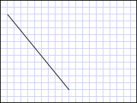

Практическое руководство. Создание линии с помощью объекта LineGeometry
В этом примере показано, как использовать LineGeometry класс, который описывает строку. Объект LineGeometry определяется его начальную и конечную точки.
Пример
В следующем примере показано, как создать и отобразить LineGeometry. Объект Path элемент используется для отображения линии. Поскольку линия не имеет площади, Path объекта Fill не задан; вместо этого Stroke и StrokeThickness используются свойства.
<Path Stroke="Black" StrokeThickness="1" >
<Path.Data>
<LineGeometry StartPoint="10,20" EndPoint="100,130" />
</Path.Data>
</Path>
LineGeometry myLineGeometry = new LineGeometry();
myLineGeometry.StartPoint = new Point(10,20);
myLineGeometry.EndPoint = new Point(100,130);
Path myPath = new Path();
myPath.Stroke = Brushes.Black;
myPath.StrokeThickness = 1;
myPath.Data = myLineGeometry;

Объект LineGeometry, соединяющий точки (10,20) и (100,130)
Другие простые геометрические классы включают LineGeometry и EllipseGeometry. Эти геометрические объекты, а также более сложные, могут также создаваться с использованием PathGeometry или StreamGeometry. Дополнительные сведения см. в разделе Общие сведения о геометрии.